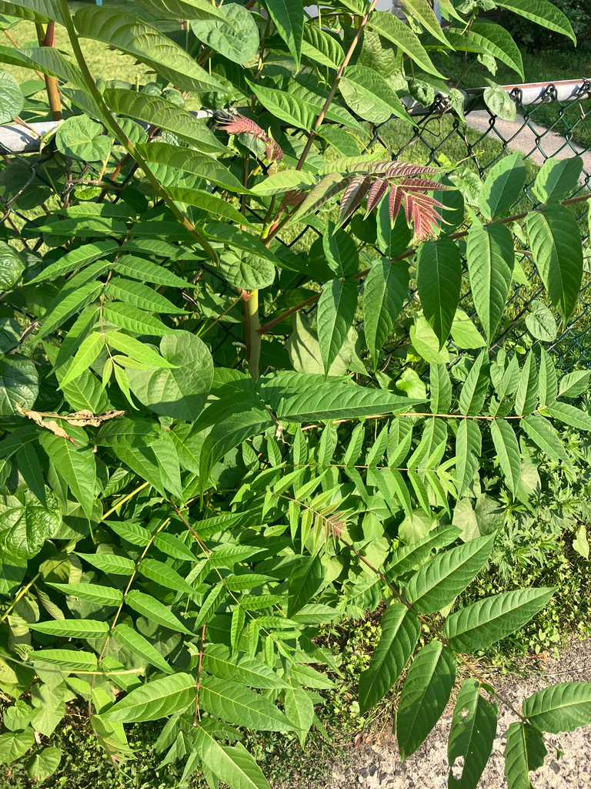
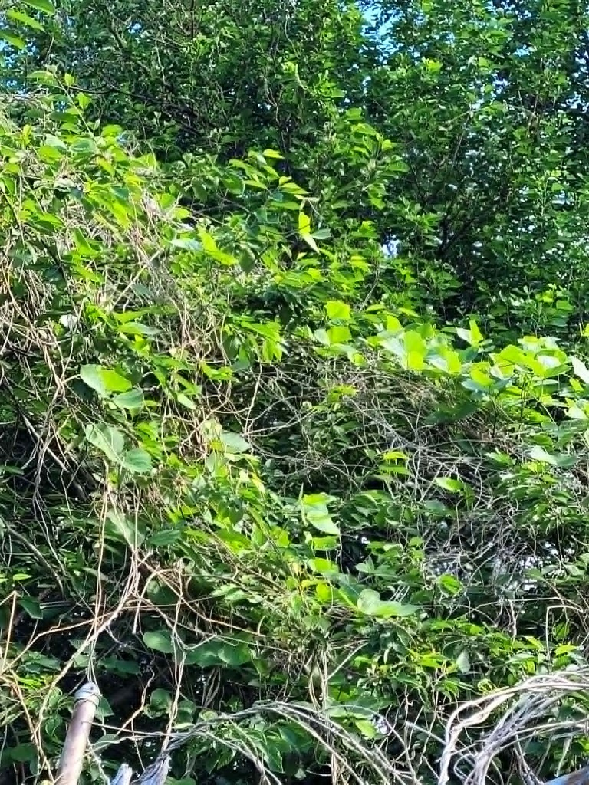
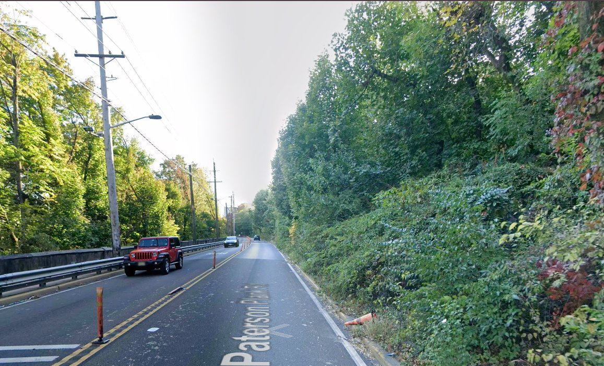

This is a project to help fund and organize habitat restoration on the Lower Palisades. The Lower Palisades is the portion of the NJ Palisades that are South of the George Washington Bridge.
Scroll ↓Mission
The “Lower Palisades” stretches from a half mile south of the George Washington Bridge to Jersey City. While the cliffs to the north have been maintained through successful preservation efforts, no such environmental management exists for the Lower Palisades.
Goals & Initiatives
The Lower Palisades need coordinated ecological management, not one-off maintenance.
Tree of Heaven, Kudzu, Japanese Knotweed, English Ivy, Norway Maple


Just topping plants when they block visibility of roadways and skylines.

Dumping and encampments in difficult areas to clean.

Background & History


The Palisade Cliffs are 200 million years old, but they didn't come under threat until quite recently. The stretch of the NJ Palisades North of the George Washington Bridge have been protected since 1900, but the Lower Palisades continue to be neglected.
More information about the project can be found in the video below. The presentation is roughly the first 22 minutes.
Personnel
The project is run by Jason Biegel, a community conservationist and resident of the Jersey City Heights since 2012.
News
Join us for a native bird count session in cooperation with local bird watching groups. Bring binoculars and a love of birds! All experience levels welcome.
More information about the project can be found in the video. The presentation is roughly the first 22 minutes.
Background on how the cliffs were nearly lost to quarrying — and the campaign that saved them.
Join
Sign up to get emails about updates on the project and opportunities to get involved.
Or email us directly: info@lowerpalisades.org